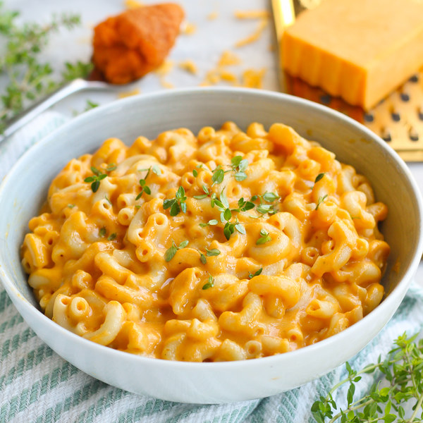

Brown Butter Pumpkin Mac & Cheese

Description
A delicious spin on the tried-and-true recipe of Mac & Cheese for fall. This recipe adds a helping of pumpkin puree to the mix to create something autumnal and filling.
If you've made homemade mac & cheese before, this recipe shouldn't be too surprising other than the addition of pumpkin puree, which can be purchased conviently premade in a can at most grocery stores.
Ingredients
- 4 oz - Cheddar Cheese
- 1/2 Package - Fresh Thyme
- 6 oz - Macaroni Pasta
- 1/2 Can - Pumpkin Puree
- 5 fl oz - Whole Milk
- All-purpose Flour
- Black Pepper
- Butter (Unsalted)
- Salt
Steps
- Fill a medium pot halfway with water, cover, and bring to a boil. Uncover, add pasta and salt, and stir for a few seconds. Cook until desired firmness, 8-10 minutes.
- While pasta is cooking, melt butter (1 tbsp) in another medium pot over medium-high heat. Stir, cooking until butter has browned, 3-4 minutes. Watch it carefully so that it does not burn.
- Remove pot from heat, stir in flour (1 tbsp), whisking constantly, 1 minute.
- Return pot to heat, gradually stir in milk. Bring to a simmer and cook for 1 minute, stirring constantly, until thickened.
- Wash and dry thyme. Slide leaves off the stems; discard the stems.
- Stir in pumpkin, salt, pepper, and most of the thyme (reserve some for garnish).
- Grate cheese and add to pot. Cook, stirring occasionally, until cheese is melted.
- When macaroni is done cooking, drain in a colander. Add to the cheese sauce and stir to combine.
- To serve, divide the macaroni and cheese between plates or bowls and sprinkle with fresh thyme. Enjoy!